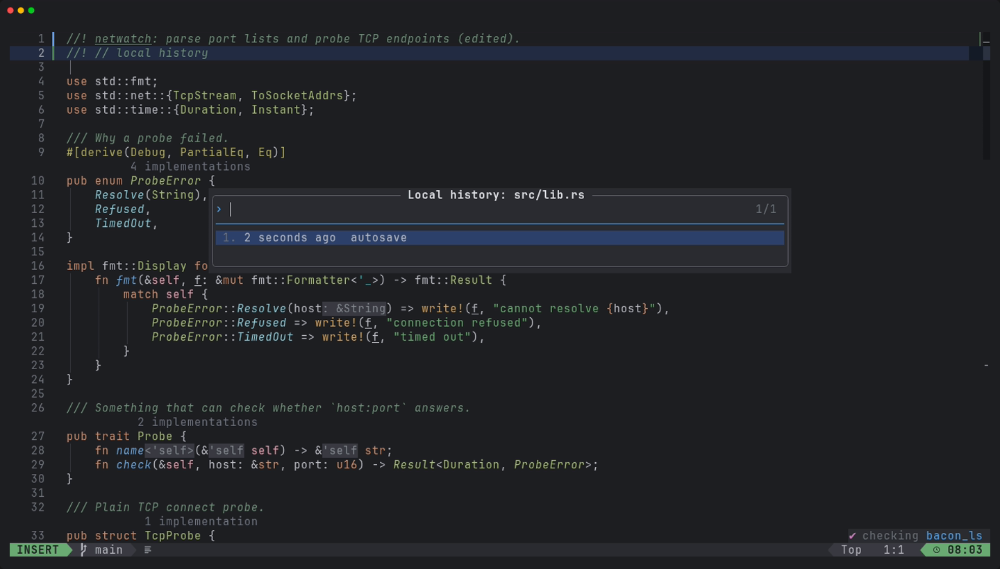
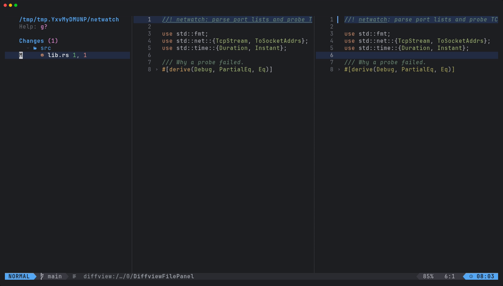

xynovim guide
A git safety net for Neovim: Local History, lazygit and diffview
The undo file brings back your last edits, but not a file you deleted, a directory an agent rewrote, or the commit you lost to a git reset --hard. This guide describes the safety net in xynovim, a personal Neovim configuration: Local History, which records each save as a commit under a private git ref, and the git tools around it, lazygit and diffview. The idea is the familiar IDE feature of the same name, built on plain git.


How Local History works
On every save, manual or auto-save, xynovim also writes the whole worktree as a commit under refs/lochist/<branch>. It does this with a private index file, so your real index, your stash and your branches are never touched. Untracked files are included, .gitignore is respected and target/ is left out. A detached HEAD gets refs/lochist/%detached-<short sha>.
- Throttled. At most one snapshot a minute per repository. A save inside the window is not lost: one trailing snapshot is scheduled for the end of it, and one more runs on exit if needed.
- Bounded. Untracked files over 10 MB are left out, and so are the largest files of a snapshot beyond 200 MB in total. Both limits are options (
vim.g.xynovim_lochist_max_bytesandvim.g.xynovim_lochist_max_total_bytes). - Safe with several editors. Each Neovim process has its own index file, so concurrent instances do not fight over
index.lock.
Because the refs live inside .git, they survive what the undo file cannot: deleted files, git reset --hard, and edits made by another program while Neovim was open.
Using it
| Command or key | What it does |
|---|---|
:LocalHistory, <leader>gH | browse the snapshots of the current file and diff against them |
:LocalHistoryRestore | restore a snapshot |
:LocalHistoryPrune | trim old snapshots |
Outside the editor it is plain git. git for-each-ref refs/lochist/ lists the refs and git log refs/lochist/main lists the snapshots of main, so you can recover a file with ordinary tools even without Neovim. Branch names are encoded (a / becomes %2F) so that two branches can never collide as a file and a directory.
:LocalHistory for a Rust file.Auto-save and its guards
Auto-save writes after about one second, including while typing, and skips format-on-save, which is off globally anyway. It has guards: it never writes into dependency or standard-library sources (~/.cargo/registry, ~/.cargo/git, ~/.rustup buffers are not modifiable), and it never overwrites a file that changed on disk since Neovim read it. The snapshot throttle above is what keeps one-second saves from producing a commit each time.
lazygit and diffview
<leader>ggopens lazygit inside Neovim, withdeltarendering the diffs when it is installed.<leader>gvopens diffview for the working tree,<leader>gVcompares the branch againstorigin, and<leader>gFshows the history of the current file.- diffview also handles merge conflicts, and
mergirafis configured as a syntax-aware merge driver.


The agent runs in a sandbox
The AI agent integration (the 99 plugin with the Claude Code provider, on <leader>9) starts its command inside bubblewrap, which exists only on Linux. Where no sandbox exists it refuses to start a request and says why. This belongs next to Local History for a reason: an agent that rewrites files is exactly the case a snapshot per save protects against. The README describes the two explicit switches that turn the sandbox off, and each one warns on every request.
Limits
- Local History has no Windows evidence at all: its specs are skipped there. Treat it as a Linux feature, and macOS as not reliably green.
- Snapshots cost disk space inside
.git;:LocalHistoryPruneis the way to trim them. - It is a safety net, not a backup: it lives in the same repository directory as your work.
Try it
Install the configuration in a git repository, edit and save a file twice, then press <leader>gH.
git clone https://github.com/xynorash/xynovim ~/.config/nvim # or ln -s <checkout> ~/.config/nvim
~/.config/nvim/scripts/bootstrap.shxynovim is a personal project: the home page has the tour, the install details and the platform status.